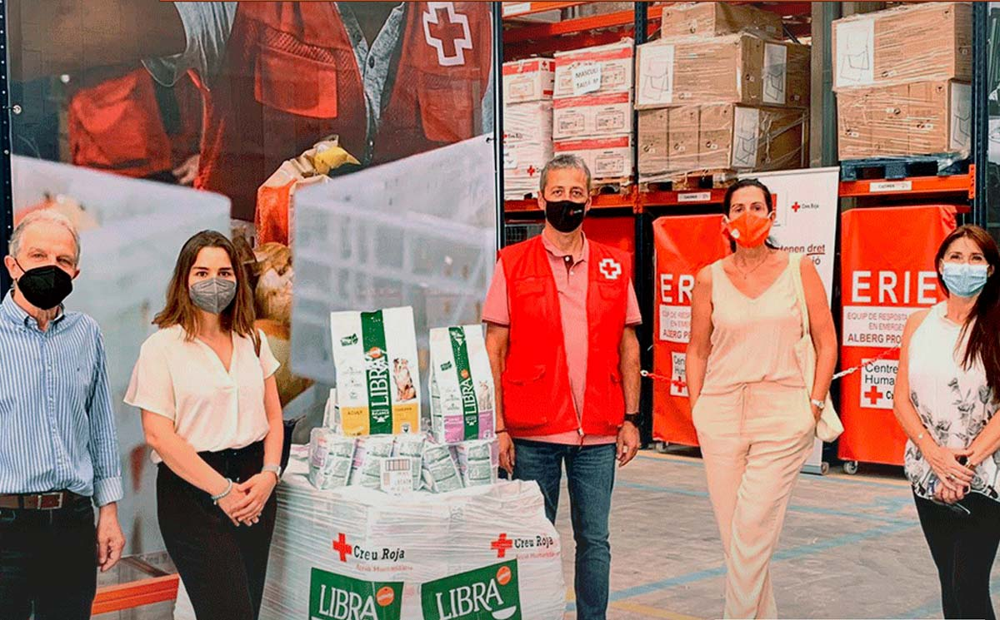
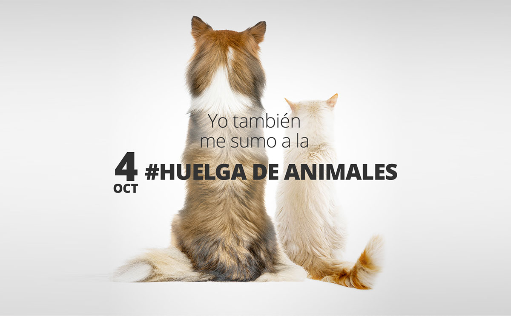
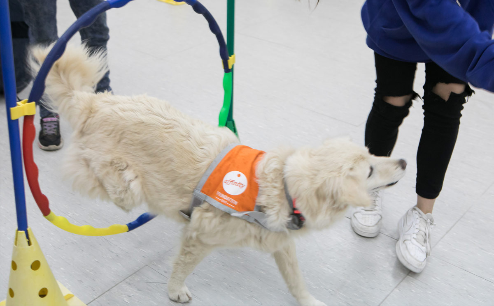
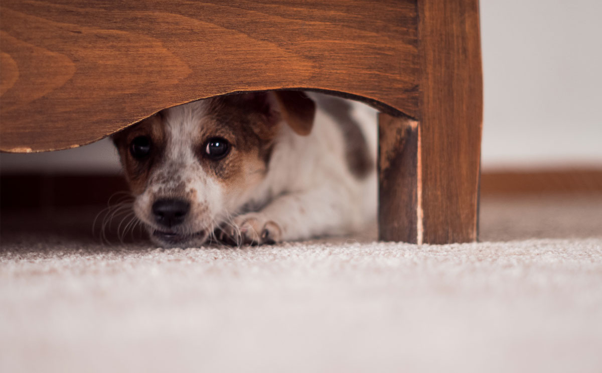
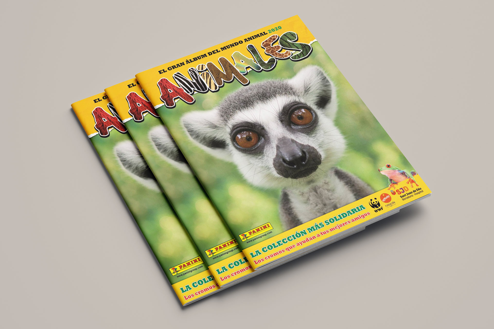

400.000 raciones de alimento para perros y gatos vulnerables
La crisis económica desatada por la pandemia de la Covid-19 ha llevado a muchas familias que comparten su vida con un... ver más.
Yo también me sumo a la huelga de animales
En la Fundación Affinity hemos destacado que este año 2020 está siendo especialmente difícil para los miles de perros y... ver más.
Impacto del confinamiento sobre las protectoras y la adopción de animales de compañía

El confinamiento ha afectado a las protectoras de animales de compañía en toda España, incidiendo en el abandono,... ver más.>
Las terapias asistidas con perros ayudan a niños tutelados y a sus padres
La Fundación Affinity y la Generalitat de Catalunya, a través de la Dirección General de Atención a la Infancia y la... ver más.
Cómo ayudar a los animales de compañía frente a los ruidos durante la cuarentena
Desde la Fundación Affinity queremos conseguir que esta cuarentena sea lo más amena posible tanto para ti como para tu... ver más.
El Álbum de animales más solidario
En este año, especialmente difícil por las dificultades que están teniendo las protectoras de animales, la acción... ver más.